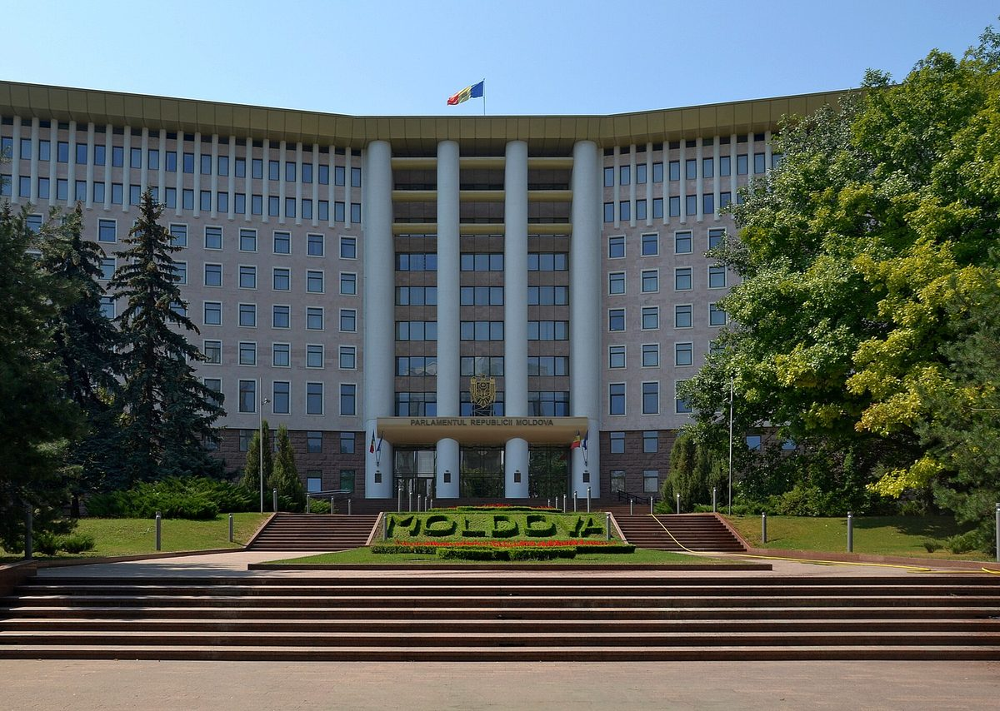

몰도바 의회, 에너지공동체법 2차 독회 가결…주민·지자체·아파트 소유자협회가 함께하는 비영리 결사체, 이익 배당 금지하고 재투자

회원인 지자체는 소유 부동산·에너지 기반시설을 공동체에 쓰게 할 수 있어…관보 게재 한 달 뒤 시행, 기존 공동체는 24개월 안에 새 규정으로 재편
몰도바 의회가 에너지공동체의 설립·등록·운영 규칙을 정한 법안을 2차 독회에서 가결해, 시민과 지방정부, 기업이 함께 에너지 사업을 벌일 법적 틀을 마련했다. 법에 따르면 에너지공동체는 비영리 결사체로 운영되며 회원과 활동 지역에 경제·사회·환경 이익을 주는 것을 주목적으로 삼고, 개인과 지방정부, 시영 기업, 공동주택 소유자협회, 중소기업이 차별 없이 회원이 될 수 있다. 법은 설립 조건과 설립자 범주, 등록 서류, 정관에 꼭 넣어야 할 내용을 정해 행정 절차를 단순하게 했고, 공동체의 재산과 수입은 정관 목적에만 쓰도록 하면서 경제활동에서 생긴 이익은 회원에게 나누지 못하고 공동체 발전과 운영에 다시 투자하게 했다. 회원으로 참여한 지방정부는 자신이 소유한 부동산과 에너지 기반시설을 공동체가 쓰도록 넘길 수 있다. 법은 관보 게재 한 달 뒤 시행되며, 이미 재생에너지공동체나 시민에너지공동체 지위를 가진 법인은 지금의 권리와 의무를 유지한 채 24개월 안에 새 규정에 맞게 재편해야 한다. 법안은 에너지부가 만들었고, 노르웨이·스웨덴이 재원을 댄 사업을 통해 유엔개발계획(UNDP) 몰도바 사무소가 자문을 맡았다.
시민에너지 관점
이익 배당을 막고 재투자를 의무로 한 것은 에너지공동체가 투자 수익 상품이 아니라 지역의 공동 살림이 되도록 처음부터 선을 그은 설계다. 배당이 없으면 주민이 참여할 동기가 약해진다는 우려가 나올 수 있지만, 그리스는 2018년 에너지공동체법을 만든 뒤 공동체가 빠르게 늘었어도 상당수가 사실상 투자자의 태양광 사업 수단으로 쓰인다는 비판을 받아 제도를 다시 손봐야 했다. 지자체가 소유 건물과 에너지 기반시설을 공동체에 내줄 수 있게 한 조항은 공공 자산을 주민 공동의 에너지 자산으로 바꾸는 통로가 된다. 국내에서도 주민과 지자체, 공동주택이 함께 꾸리는 비영리 에너지공동체를 법으로 인정하고, 공공 재산을 쓸 수 있는 길을 함께 열어야 한다.
출처: noi.md 2026-11-05 기자 미표기 원문 보기
モルドバ議会、エネルギー共同体法を第2読会で可決…住民・自治体・マンション所有者協会が参加する非営利団体、利益の配当を禁じ再投資へ
会員の自治体は所有する不動産やエネルギーインフラを共同体に使わせることが可能に…官報掲載の1か月後に施行、既存の共同体は24か月以内に新規定へ再編
モルドバ議会は、エネルギー共同体の設立・登録・運営のルールを定めた法案を第2読会で可決し、市民と地方自治体、企業が共同でエネルギー事業を行うための法的枠組みを整えた。法律によると、エネルギー共同体は非営利団体として運営され、会員と活動地域に経済・社会・環境面の利益をもたらすことを主な目的とし、個人、地方自治体、市営企業、集合住宅の所有者協会、中小企業が差別なく会員になれる。法律は設立条件、設立者の範囲、登録書類、定款に必ず盛り込むべき事項を定めて行政手続きを簡素化し、共同体の財産と収入は定款の目的にのみ使うこととしたうえで、経済活動で得た利益は会員に分配できず、共同体の発展と運営に再投資しなければならないとした。会員として参加する地方自治体は、所有する不動産やエネルギーインフラを共同体が使えるよう提供できる。法律は官報掲載の1か月後に施行され、すでに再生可能エネルギー共同体や市民エネルギー共同体の地位を持つ法人は、現在の権利と義務を維持したまま24か月以内に新たな規定に合わせて再編しなければならない。法案はエネルギー省が作成し、ノルウェーとスウェーデンが資金を出した事業を通じて国連開発計画（UNDP）モルドバ事務所が助言した。
市民エネルギーの視点
利益の配当を禁じ再投資を義務づけたことは、エネルギー共同体が投資収益の商品ではなく地域の共同の暮らしを支えるものになるよう、最初から線を引いた設計だ。配当がなければ住民が参加する動機が弱まるとの懸念もありうるが、ギリシャは2018年にエネルギー共同体法をつくった後、共同体は急増したものの、その多くが事実上投資家の太陽光事業の手段として使われているとの批判を受け、制度を改めざるをえなかった。自治体が所有する建物やエネルギーインフラを共同体に提供できるとした条項は、公共の資産を住民共同のエネルギー資産に変える通路になる。韓国でも、住民と自治体、集合住宅がともに運営する非営利のエネルギー共同体を法で認め、公有財産を使える道もあわせて開くべきだ。
出典: noi.md 2026-11-05 記者名なし 原文を読む
摩尔多瓦议会二读通过能源社区法…居民、地方政府和公寓业主协会共同参与的非营利协会，禁止分红、利润再投资
作为成员的地方政府可把自有不动产和能源基础设施交给社区使用…在政府公报刊登一个月后施行，现有社区须在24个月内按新规改组
摩尔多瓦议会二读通过了规定能源社区设立、登记和运营规则的法案，为公民、地方政府和企业共同开展能源项目建立了法律框架。根据该法，能源社区以非营利协会形式运营，主要目的是为成员及所在地区带来经济、社会和环境效益；个人、地方政府、市属企业、公寓业主协会和中小企业都可在非歧视条件下成为成员。法律规定了设立条件、发起人类别、登记文件和章程必备内容，以简化行政程序；社区的财产和收入只能用于章程规定的目的，经营活动所得利润不得在成员之间分配，而须再投资于社区的发展和运营。作为成员参与的地方政府，可以把其拥有的不动产和能源基础设施交给社区使用。该法在政府公报刊登一个月后施行，已经具有可再生能源社区或公民能源社区身份的法人，须在保留现有权利和义务的前提下，于24个月内按新规定改组。法案由能源部起草，联合国开发计划署（UNDP）摩尔多瓦办事处通过挪威和瑞典出资的项目提供了咨询。
市民能源视角
禁止分红并规定利润再投资，是从一开始就划清界限的设计，让能源社区成为地方的共同家业，而不是投资收益产品。有人担心没有分红会削弱居民参与的动力，但希腊在2018年制定能源社区法后，社区数量虽然迅速增加，其中相当一部分却被批评实际上成了投资者经营光伏项目的工具，不得不重新修改制度。允许地方政府把自有建筑和能源基础设施交给社区使用的条款，则是把公共资产转化为居民共有能源资产的通道。韩国也应在法律上承认由居民、地方政府和公寓共同运营的非营利能源社区，并同时打开使用公共财产的渠道。
来源: noi.md 2026-11-05 未署名 查看原文
Moldova's parliament passes energy community law at second reading: non-profit associations of residents, local governments and homeowners' associations, with no dividends and profits reinvested
Member local governments may let communities use their property and energy infrastructure; law takes effect one month after publication, and existing communities get 24 months to reorganise
Moldova's parliament has passed at second reading a bill setting out the rules for founding, registering and running energy communities, creating a legal framework for citizens, local governments and businesses to carry out energy projects together. Under the law, energy communities will operate as non-profit associations whose main purpose is to deliver economic, social and environmental benefits to their members and the places where they operate, and individuals, local authorities, municipal enterprises, homeowners' associations in apartment buildings and small and medium-sized enterprises can all join on non-discriminatory terms. The law sets the conditions for founding a community, the categories of founders, the documents needed for registration and the information that must be in the statutes, in order to simplify procedures; a community's assets and income may be used only for the aims in its statutes, and profits from economic activity cannot be distributed to members but must be reinvested in the community's development and operation. Local authorities that are members may hand over property and energy infrastructure they own for the community's use. The law takes effect one month after publication in the official gazette, and legal entities that already hold renewable energy community or citizen energy community status will have 24 months to reorganise under the new rules while keeping their existing rights and obligations. The bill was drafted by the Ministry of Energy with advisory support from the UN Development Programme in Moldova, through a project funded by Norway and Sweden.
Citizen Energy View
Banning dividends and requiring reinvestment draws a line from the start, so that energy communities become shared local assets rather than investment products. Some will worry that without dividends residents have less reason to join, but after Greece passed its energy community law in 2018, communities multiplied quickly, yet many were criticised as vehicles for investors' solar projects, and the rules had to be revised. The clause letting local authorities hand their buildings and energy infrastructure to a community opens a channel for turning public assets into energy assets owned jointly by residents. Korea, too, should recognise in law non-profit energy communities run jointly by residents, local governments and apartment complexes, and open the way for them to use public property.
Source: noi.md 2026-11-05 No byline Read the original